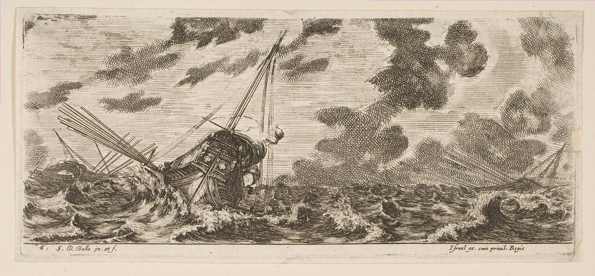

Классификация кораблей у Кристофоро да Канала: что в остатке?
Лучше держать себя поопасливей - береженого и Бог бережет.
Мельников-Печерский. В горах
Вернемся к прерванному рассказу о принципах классификации кораблей у Кристофоро да Канала (начало его можно посмотреть здесь).
Рассмотрев в своем труде два класса кораблей: те, которые всходят на одну волну и те, которые способны оседлать сразу три, да Канал переходит к философствованию на тему предопределенности судьбы моряка, столкнувшегося со стихией, противостоять которой он не в силах. Для сравнения он обращается к профессии врача. Наш автор пишет, что есть болезни, от которых не найдено лекарств. Врач, столкнувшись с ними, бессилен и должен препоручить судьбу пациента Господу, в руках которого и наша жизнь, и наша смерть. Подобно этому, есть в морях такие бездонные глубины, и моряка встречают порой такие страшные штормы, что противостоять им невозможно и остается только надеяться на Бога.

Три корабля в штормовом море. Гравюра флорентийского художника Stefano della Bella (1610–1664)
Но это совсем не означает, продолжает адмирал, что если лекарство не всегда хорошо лечит, мы вовсе должны отказаться от услуг врача. Хотя в крепкий шторм качества корабля и мастерство корабельщика не всегда являются решающими факторами, все же опытный и предусмотрительный моряк оберегает свой корабль в самых тяжких испытаниях лучше, чем дилетант. И корабль намного лучше способен переносить шторм, если у него корпус крепче и устойчивее к воздействию тяжелых ударов стихии, чем у другого судна.
Здесь да Канал возвращается к предыдущим страницам своего трактата, напоминая, что корабли второго класса (которые всходят на три волны) значительно лучше всех других. В то же время, замечает да Канал, есть корабли, которые не попали ни в первый, ни во второй класс. Это те суда, которые «всходят лишь на две волны»: одна из них поднимает нос, другая в это же время опускает корму (напомним, что венецианский флотоводец длиной волны считает лишь половину ее длины в нашем сегодняшнем представлении). В число этих кораблей входят малотоннажные навы (le navi piccole), каравеллы (le caravelle), гриппы (i grippi), марсилианы (le marciliane), ширази (li schirazzi), фусты от 16 до 19 банок (le fuste da 16 sino ai 19 banchi) . Эти корабли остались вне классификации, потому что их мореходные качества крайне низки. Когда корма такого судна опускается при поднятом носе, «ее настигает третья волна, которая перехлестывает через корму, заполняет корабль водой и топит его.»
В дальнейшем мы планируем рассмотреть характеристики каждого из этих кораблей, попробуем понять их место в морской истории; тогда и решим, насколько обоснованным является низкое мнение о них Кристофоро да Канала. А он считает, что после встречи с сильным штормом "в порт возвращаются только десять таких кораблей, в то время как сотня навсегда остается в море".
Мы уже приводили мнение известного французского историка Фернана Броделя о роли малотоннажных купеческих судов Нового времени (см. наш пост «Пролетарии моря»). В последующих нескольких постах попробуем рассказать более подробно о некоторых из этих морских извозчиков. Тем более, что ранее мы давали обещание сделать это.
P.S. Отвлекаясь на подобные темы, мы не будем забывать о галере как основном предмете нашего разговора. Тем более, что и Кристофоро да Канал в своем труде в качестве наиболее безопасного и эффективного в бою корабля выбирает «la galera di tre ordini di remi» - галеру с тремя рядами весел.